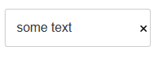

This document describes the updates and fixes made to Alpha Anywhere since its initial release.
To see the 'What's New in V12' document (which describes all of the new features in Alpha Anywhere's initial release) please click here.
Please note that Alpha Anywhere patches are only available to users with
a current subscription.
You can verify your subscription status from within Alpha Anywhere by
going to Help, About, or by clicking this link shown here (https://activation.alphasoftware.com/subscriptionStatus.aspx).
If you install an update for which your subscription is not entitled,
you will need to uninstall the update and rollback to an older version
that you are authorized to use in order to continue using Alpha
Anywhere.
In addition to the official updates that Alpha Software makes available from time to time (which are described in this document), we also make available our internal pre-release builds that allow you to see what features have been added and what bugs have been fixed since the last official update. The features and bug fixes in the pre-release build will be part of the next official update. To see the pre-release notes, please click here.
| Tabbed UI Component | Using Alternative Login |
The 'Alternative Login' feature allows a user to
log in to an application using their credentials
from a social network, such as Google, Twitter,
LinkedIn, etc. The UX component allows you to build Login dialogs that allow users to log into an application using an Alternative Login. The integrated login feature in the Tabbed UI, however, does not allow you to expose Alternative Logins. Therefore, if you want to allow a user to login into an application that uses the Tabbed UI, you must use a UX component in the Tabbed UI to do the log in. In this video we show how this can be done. Watch Video Date Added: 2014-09-11 |
| UX Component | Downloading a Google Chart as a Bitmap |
In the video 'Using Google Charts as an Alternative to the
Built-in Chart Controls' we showed how you can
use Google Charts in a UX component. In this
video we show how you can add a button to the UX
to download a Google chart as a bitmap image.
The user can then save the image to disk, or
print the image. Note: Not all Google chart types support this feature. Watch Video - Part 1 Watch Video - Part 2 Download Component Date Added: 2014-09-13 |
| Xbasic | Working with SQL Databases |
A common requirement in server-side events
handlers (including custom Ajax callbacks) is to
write some Xbasic code that manipulates data in
a SQL database. Xbasic has a very powerful set of objects (called AlphaDAO) for interacting with SQL databases. In this video we give a quick overview to using Xbasic to work with SQL databases. (For a full introduction and tutorial on using Xbasic to work with data in SQL databases, go to the Help, Open Documentation menu command and type 'Using Xbasic with SQL Tables' in the filter box.) Watch Video - Part 1 Watch Video - Part 2 Watch Video - Part 3 Watch Video - Part 4 |
| Xbasic | Calling Into Node.JS from Xbasic |
Node.js is a popular technology for implementing
server-side utilities. Xbasic has very tight
integration with Node and it is possible to
create Node services that can be called from
Xbasic. In this video we show how a Node service can be defined and then called from Xbasic. Watch Video - Part 1 Watch Video - Part 2 Watch Video - Part 3 |
UX and Grid Component - Ajax Callbacks - OnComplete Javascript - A new option has been added to the method that makes an Ajax callback from the Grid and UX component. You can now specify Javascript to run when the callback is complete.
This option has been exposed in the Action Javascript Ajax Callback action as shown in the image below:
The Javascript that you specify is run after the callback is complete and after any Javascript returned by the callback function has executed.
To specify the after callback complete Javascript in the UX or Grid's .ajaxCallback() method, you set the onComplete property in the optional optionsObject passed in.
For example:
{dialog.object}.ajaxCallback('','','myXbasicFunction','','',{onComplete: function() {
alert('callback is complete')
}
})
Tabbed UI - Integrated Login Feature - When the Login window is opened, the User name field is now automatically given focus. Previously the user needed to explicitly click on the user name control. In addition, when the password field has focus, pressing the Enter key will now execute the Login button.
Security Framework - Importing Data into the User Table - The previous import method, a5ws_ImportUsersDBF(), did not support import into SQL based security tables. The import feature has been rewritten and a new method, a5ws_ImportUsers(), is available. The import will now properly add records into SQL security tables.
The a5ws_ImportUsers() method can be used to import data into either .dbf security tables or SQL security tables. When importing into .DBF tables security tables, this new method is up to twice as fast.
TIP: You can also now use the a5ws_ImportUsers() function from the Interactive Window of the Application Server control panel to import users into your security tables on your server. When you use this function from the Interactive Window it will display a list of all web projects that have security and you can select the project into which you wish to import data.
Xbasic - Node.JS - Extending Server-side Functionality using Node.js - Node.js is a popular program for writing server side utilities in Javascript. Alpha Anywhere now has tight integration with Node and you can now define your own Node modules that can be called from Xbasic.
Watch Video - Part 1
Watch Video - Part 2
Watch Video - Part 3
To create a new 'Node Service' that can be called from Xbaisc, you create a new .js file in the Node_Services folder in the Alpha Anywhere executable folder. The syntax for this .js file is the syntax you would use for any Node module.
To call a Node service from Xbasic, you:
In the following example, we have defined a trivial Node service that takes as its input two variables, 'firstname' and 'lastname' and sends back a string showing: Hello firstname lastname.
The Node service in this example is called 'hello'. Therefore the '_command' property of the JSON command object is set to 'hello'
You must also set an '_id' property in the JSON command object. This can be any value. Using a UUID for this value is convenient.
The Node service is called using the .NodeRequest() method and the result is returned as a JSON string with properties for the error text (if there was an error) and 'result' - the result of the request. The JSON response can be parsed to get Xbasic varibles, or the json_extract() function can be used to extract the 'result' property.
dim n as helper::V8
dim p as p
'generate an id for the request we are about to send to Node.
'we just use a GUID for convenience
p._id = api_uuidcreate()
'set the _command property. This is the name of the Node
service we want to call
p._command = "hello"
'specify any variables you want to pass to the Node service
p.firstname = "Nellie"
p.lastname = "Jones"
'convert the Xbasic .dot variable to a JSON string.
dim jsonCommand as c
jsonCommand = json_generate(p)
?n.NodeRequest(jsonCommand)
= {"_id":"id1","error":"","result":"Hello Nellie Joness"}
Here is how the corresponding Hello.js file is defined. This file must be in the Node_Services folder in the Alpha Anywhere executable folder. This is a standard Node module. It can 'require' any other Node modules that you have written, or that have been installed using NPM (the Node Package Manager).
exports.handler = function(packet,response,sendResponse)
{
var e;
var attachments = null;
var msg = 'Hello ' + packet.firstname
+ ' ' + packet.lastname;
response.result = msg;
sendResponse(response,attachments);
};
If you edit the .js file in the Node_Services folder after having called it, your edits will not be seen until you shutdown the Node service. The next time you call the Node service you will see a short delay as Node starts up.
To shut down the Node service you can all the .NodeShutDown() method on the helper::V8 object instance. For example, in the above example the helper::V8 object instance was called 'n', so the following command will shut Node down.
n.NodeShutdown()
NOTE: Node.exe is automatically installed in the Alpha Anywhere executable folder when you install Node. You do not need to install Node yourself.
UX Component - Client-side Events - onPhoneGapReady - This event fires when the UX component is running in a PhoneGap shell and the PhoneGap library has been loaded.
NOTE: The existing onCordovaReady event has been deprecated and will be removed at some point. Move any code defined for the onCordovaReady event to the onPhoneGapReady event.
UX Component - {dialog.object}.phoneGapLoaded() Method - Returns true if the UX component is running in a PhoneGap shell.
List Control - Detail View - Disconnected Application - Count Records to Be Synchronized - A new method gives a count of the number of unsynchronized records.
Syntax:
object = {dialog.object}.countRecordsToSynch(listId)
Returns an object with properties showing the number of records that have not yet been synchronized with the server. The object has these properties: count, updatedRecords, newRecords, deletedRecords. 'count' is all dirty records (edits, inserts and deletes), 'updatedRecords' is all records that were edited, 'newRecords' is records that were added and 'deletedRecords' is records that were deleted.
Example:
var o = {dialog.object}.countRecordsToSynch(listOrders)
alert('You have ' + o.count + ' records to synchronize')
List Control - Detail View - New Events to Transform Data Before Display and Save - When you define a List control with a Detail View, two new properties are exposed for each List field.
These properties allow you to transform the data before it is displayed in the Detail View and before the Detail View is saved back to the List. The code you you specify in these two properties must 'return' the transformed value.
The Javascript for both of these properties can refer to
this._value
to get the default value that the Detail View control should be populated with when the user clicks on a Detail View row and to get the default value that the List should be updated with when the user clicks the Save button to save the Detail View back to the List.
For example, say that in the List data for row 2, the value for the Lastname field was 'Smith'.
In the onDetailViewPopulate event, you might specify this Javscript
return this._value.toUpperCase()
When the user clicked on row 2, the value shown for the Lastname field in the corresponding Detail View control would be:
SMITH
even though the actual data in the List for that field was 'Smith'.
Similarly, in the onListUpdate event, you might specify this Javascript:
return this._value.toLowerCase()
When Detail View edits were saved back to the List, the List would be updated with the the lowercase version of the data in the Lastname field
UX and Grid - Edit-Combo - Filter choices by searching anywhere in field - Previously, in an edit-combo, as you typed into the textbox, the choices were filtered, starting the search with the first letter in the entry. Now, you can set the 'Search style' property to search anywhere in each entry.
For example, if the choices in the edit-combo were
Austria
France
USA
UK
and you typed 'U' in the textbox, the choices would be filtered to
USA
UK
Now, if you set the 'search style' to 'Anywhere in field', the choices will be filtered to
Austria
USA
UK

UX Component - HTML Editor - Toolbar Icons - You can now customize all of the icons used in the HTML editor toolbar.
Reports - SQL - Native SQL - Previously, if a report was based on a custom SQL statement and the SQL type was set to 'Native', during execution of the report the SQL statement was parsed (sometimes more than once). Parsing the SQL was necessary in order to determine if the report used arguments that were not defined (and therefore if a prompt should be shown for missing arguments) and in order to add in dynamic filters and order definitions.
In certain cases, the native SQL being passed to the report engine was so complex that parsing the SQL added a substantial delay to rendering the report.
Now, if you specify that the report data source uses native SQL the SQL query for the report will never be parsed. It will simply be passed to the database engine to execute.
As a result of this change if your native SQL statement uses arguments and you do not pass in values for all of the arguments used in the SQL, the report will no longer be able to dynamically prompt for missing argument values. Also if you are attempting to dynamically add a filter or order to the report at runtime, this will no longer work in the case were the report is based on native SQL.
UX Component - List Control - Scroller - Previously, the 'scroller' feature was only supported for Lists if the UX style was set to iOS7, AndroidDark or AndroidLight. Now, the scroller is supported for all styles.
UX Component - Security Framework - Error Messages - Errors returned from the server-side Action Scripts to validate web security values, save web security values, and change web security passwords may not display property if the UX uses Panels, a placeholder is specified for the UX component validation errors, or the option to show errors in a popup window is selected. This is now fixed. The Action Scripting actions in the server-side events must be edited to apply the change. Select any of the web security actions in a server-side event and select "Edit action". Click OK to save and the code will be updated.
Grid Component - Oracle 9i - Fixed an issue using a Grid with Oracle9i.
UX Component - Textbox and Textarea Controls - Help Icon - Container With Layout Mode - If a textbox or textarea control had its help icon turned on, and if the icon was displayed left or right of the control and if the UX layoiut mode was set to 'Container width' (the default mode), the icon would show above or below the control. This is now fixed.

UX Component - Data Binding - Views - Auto-increment - Entering new records into a UX component that was bound to a View (rather than a Table) which had an auto-increment primary key would fail. The record was inserted, but not refreshed after insert.
UX Component - Display Wait Message on Ajax Callback - In some cases the wait message was not being cleared after the callback completed and the screen remained in a locked state.
UX and Grid Components - Lookup Grids - SQL - Filter - If you defined a Lookup Field that used a Grid based on a SQL database and you specified that the Lookup Grid had both a static filter and a dynamic filter, you would get an error when opening the lookup Grid. The error only happened if the static filter was defined as a 'base' filter.
Grid Component - Image Download - Detail View - Image download of an image field in the Detail View part was not working correctly.
Grid Component - File Upload Action - New Record Rows - Uploading a file on a new record row caused an error.
UX Component - HTML Editor - Container Window - If you added a textarea control (configured as an HTML editor) into a Window Container, then when the window was displayed, the HTML editor was displayed, but you could not type into the editor.
Grid and UX Builder - Working Preview - Internet Explorer V10 and Earlier - If you had IE10 or earlier installed on your computer, in some cases you would get a Javascript error when testing a component in Working Preview.
AlphaDAO - Oracle - Returning a Resultset from a Stored Procedure - Returning a SQL::Resultset object from an Oracle stored procedure can be tricky depending on which version of Oracle you are using.
As an alternative to returning a resultset from a stored procedure, you can use an Oracle function.
In this example we show how a resultset is returned using an Oracle function.
NOTE: The Oracle database used in this example was created by using the Workspace Upsize Genie (see the 'Tool' menu when the Control Panel has focus) to upsize the sample Alphasports Workspace that ships with Alpha Anywhere.
dim cn as sql::Connection
dim flag as l
flag = cn.open("::Name::oracle_alphasportsUpsize")
dim sql as c
sql = <<%str%
create or replace FUNCTION REFCURSOR_CUST(p_city IN VARCHAR2) RETURN
SYS_REFCURSOR AS p_recordset SYS_REFCURSOR;
BEGIN
OPEN p_recordset FOR select FIRSTNAME, LASTNAME, BILL_CITY from CUSTOMER
where bill_city LIKE p_city;
return p_recordset;
END REFCURSOR_CUST;
%str%
'Oracle does not like CRLF in statements, so convert CRLF to spaces
dim sql2 as c
sql2 = stritran(sql,crlf()," ")
'Execute the SQL statement to define the function
flag = cn.Execute(sql2)
dim sql::arguments
args.add("Whatcity","Boston")
'Execute the function. Notice the 'from dual'
syntax that Oracle requires
flag = cn.Execute("select REFCURSOR_CUST(:whatcity) from dual",args)
dim rs as sql::resultset
rs = cn.ResultSet
dim txt as c
txt = rs.ToString()
showvar(txt)
Here is what we see:
Mary McDonald Boston
Richard Queen Boston
If you are using Oracle 12, you have the option of using implicit cursors in a stored procedure.
The above function definition could be written as the following stored procedure:
CREATE OR REPLACE PROCESURE SP_GETCUSTOMERS (p_city IN VARCHAR2)
AS
p_recordset SYS_REFCURSOR;
BEGIN
OPEN p_recordset FOR SELCT FIRSTNAME, LASTNAME, BILL_CITY FROM CUSTOMER WHERE BILL_CITY LIKE P_city;
DBMS_SQL_RETURN_RESULT(p_recordset);
END;
UX Component - In-Control Buttons - Delete Text - Only Show Icon if Existing Text - The In-Control Button feature of a textbox allows you to embed icon inside a textbox. A typical use for for this feature is to allow the user to easily clear out existing text in the control.
You might want the icon to only show if there is existing text in the textbox, as shown in the the screenshots below.
 |
 |
In order to do this you will need to add code to t he Click action for the in-control button and to the onKeyUp event for the textbox control.
You will also need to add code to the onRenderComplete client-side event of the UX to set the initial state of the icon.

Here is the code you need to add to the Click action:
//clear the value in the control
{this}.value = '';
//get a pointer to the element that contains the
icon and hide it
var ele = $('{dialog.ComponentName}.V.R1.TXT1.CUSTOMBUTTONSTATIC.0')
ele.style.display = 'none';
Here is the code to add to the onKeyUp event for the textbox.
//get a pointer to the element that contains the icon
var ele = $('{dialog.ComponentName}.V.R1.TXT1.CUSTOMBUTTONSTATIC.0');
//if there is text in the control, show the icon,
else hide the icon
if(this.value == '') {
ele.style.display = 'none';
} else {
ele.style.display = '';
}
Here is the code for the onRenderComplete client-side event to set the initial state of the icon:
var ele = $('DLG1.V.R1.TXT1.CUSTOMBUTTONSTATIC.0')
ele.style.display = 'none';